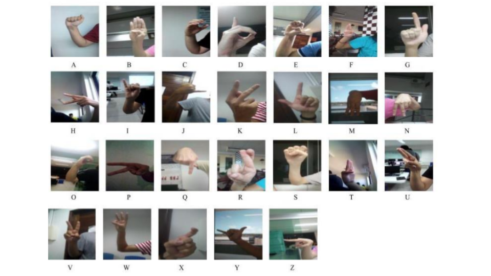
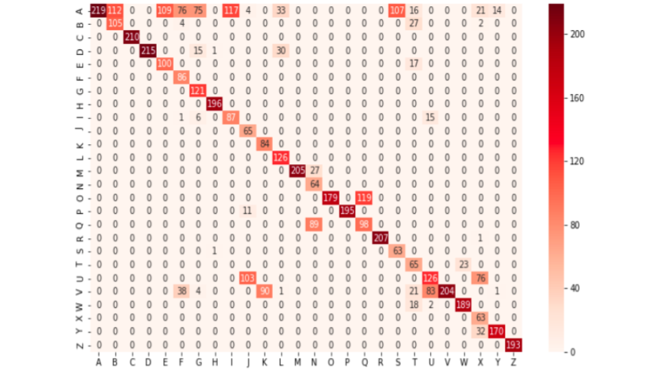
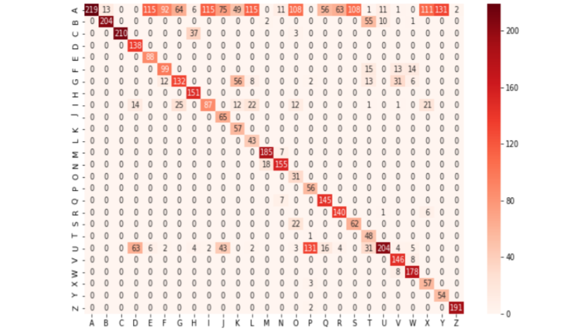

-
 Inventory Management System
Inventory Management System
-
Dungeon Scrolls

Libras Translator
Source Code : Public
Research project developed in the video laboratory for the translation of Libras (Brazilian Sign Language) signals into natural language using convolutional neural networks.
Contributions
In this project, I was responsible from the pre-processing data, like reshape of images or stratified loading the database, to feeding of state of the art neural network architectures.
Creation of dataset
Initially, we create a dataset of videos that aims to get closer to real practical situations, to build this, initially we recorded videos for each of the 26 letters of the alphabet in Libras with 13 users considering different environments, backgrounds, signers, body, arms and hand positions, lighting patterns, age, gender and ethnicity, which results in 338 recorded videos. Afterwards, we preprocess the videos with the FFmpeg software, extracting 20 images per second of the videos collected. Some examples of these images are bellow:
Preprocessamento
Initially we apply data augmentation in images/samples, using Keras. The parameters
applied were as follows:
The resulting final dataset consists of approximately 224000 images,
from the 26 letters of the Libras alphabet signed by 13 persons in
different backgrounds, body arm, and hand positions, and different lighting
patterns were generated.
Data Pipeline
Before training, we load a stratified collection of samples in batches,
due to the difficulty in managing the use of memory in the platform that
we use for training and testing. More specifically, for each of the 26
letters of the alphabet, the largest possible number of images were taken,
which the memory of the training machine would be able to support, leaving only
free space for the processing of main functions of the operating system, and other
operations.
For example, for the VGG16 model, we were only able to run 44,800 instances (images)
per batch. Thus, we had to execute five batches of 44,800 images to complete one
eppoch (224 thousand images).
Treinamento
Since our final goal is a solution that can be used by Brazilian deaf people in
real situations and ubiquitously, we focus on the use of neural network architectures
that were efficient for use in smartphones or embedded systems, but which also
presented good results in competitions or in works in other areas of computer
vision, such as the MobileNet, with 71% in ImageNet dataset and NASNetMobile, which
was proposed more recently and has better results in ImageNet (74.1%) when
compared to MobileNet. However, for comparison, we also perform tests
on more robust architectures like VGG16, InceptionResNetV2, respectively
with accuracy in ImageNet of 71% and 80% in NasNetLarge which is also more
recent than the other two cited and achieved state of the art accuracy of 83%
in the same dataset.We can see these results in confusion matrix below to VGG16
and MobileNet, respectively:

